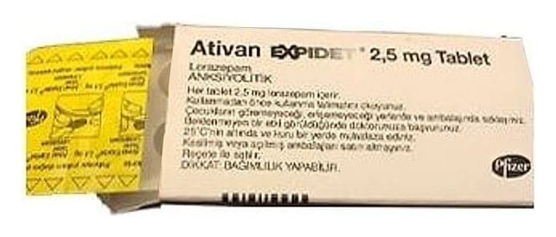

Ativan Expidet 2.5 mg Tablet, 20 Adet

Ne için kullanılır
KT · Bölüm 1ATIVAN EXPIDET lorazepam etkin maddesini içerir. Lorazepam benzodiyazepinler adı verilen bir ilaç grubundadır ve merkezi sinir sistemine etki ederek kaygıyı azaltır (anksiyolitik etki), normal uykuya yakın bir uykuyu destekler (hipnotik etki), duygu durumunu iyileştirir ve psikolojik strese karşı duygusal reaksiyonların şiddetini azaltır (trankilizan etki).
ATIVAN EXPIDET 2,5 mg Tablet 20 tabletlik blister ambalajlarda bulunmaktadır.
ATIVAN EXPIDET aşağıdaki durumlar ciddi olduğunda ve normal günlük yaşamda aksamaya neden olduğunda kısa süreli tedavi olarak kullanılır: • Kaygı ve kaygı ile ilişkili duygusal stres durumları • Uykusuzluk